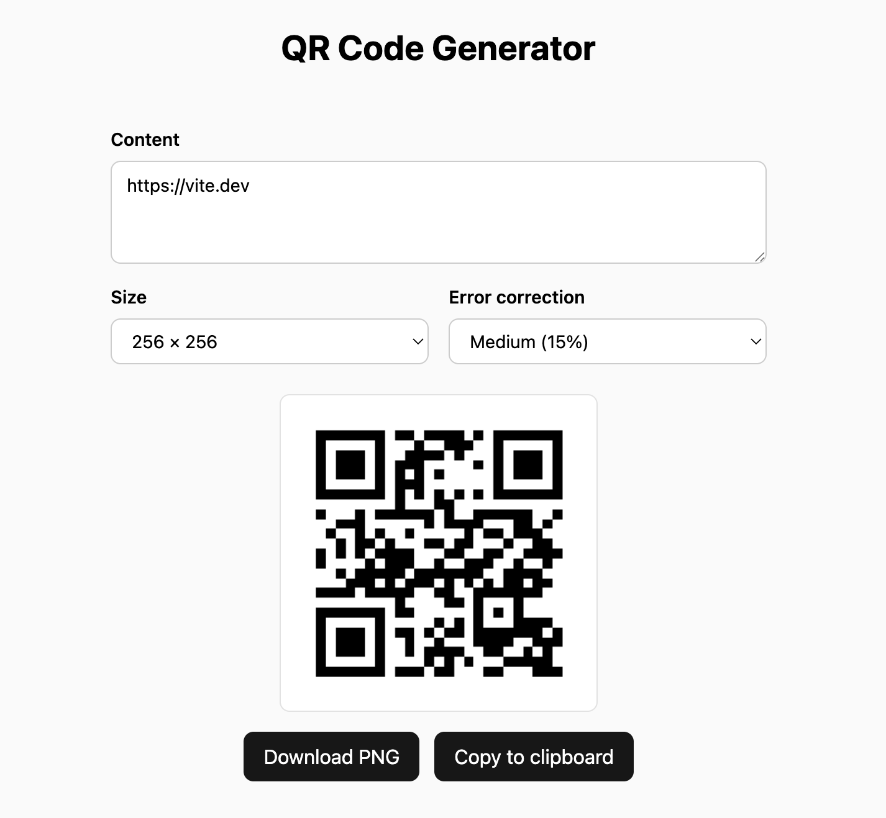

QuasarWave
QW (QuasarWave)
QW (QuasarWave) is a highly opinionated LLM inference runtime targeting MLX-only, single-user deployments.
Showcase

And the Pi agent with QW runtime built this qr-code app in 2m 40s:

Project Goals
QW aims to be explicitly "focused", to achieve these goals below:
- Smooth user experience: It should "just work" without complex first-time configuration. Decode TPS and TTFT (time to first token) are the top priority metrics to optimize.
- Minimal: No fancy features, fixed model, fixed environment.
- No fancy features: GUI, MCP integration, etc. are outside this project's
scope. 4-bit TurboQuant cache quantization and MTP with depth
$k=3$are enabled by default. - Fixed model: Qwen3.8 27B (dense model) only. No generalization across
different model structures.
- QW serves Jundot/Qwen3.8-27B-oQ4e-fp16-mtp as the default model.
- If a better model with similar requirements is released, this project may migrate to the new model, but it will never support more than one model at a time.
- Fixed environment: MLX only. No generalization across CUDA, ROCm, ...
- No fancy features: GUI, MCP integration, etc. are outside this project's
scope. 4-bit TurboQuant cache quantization and MTP with depth
Quickstart
Prerequisites:
- macOS on Apple Silicon
- Rust 1.85 or newer
- CMake 3.16 or newer
- Xcode Command Line Tools (
xcode-select --install)
Installation:
cargo install --locked --git https://github.com/cr0sh/qw [--tag TAG] qw-cli
Run the server:
qw serve
Obtain statistics about storage usage and status:
qw stats
For a more detailed manual, use --help — or just ask your LLM.
Performance
QW aims to be fast enough for daily use. Below is the benchmark table from
tag v0.1.0. You can reproduce it with cargo bench. The benchmark was run on
a Mac Studio with an Apple M4 Max chip, 64 GB of memory, and a 40-core GPU.
| fresh | 10k | 64k | |
|---|---|---|---|
| prefill | 254.27 | 221.07 | 97.08 |
| decode (baseline) | 27.20 | 21.65 | 12.80 |
| decode (MTP) | 58.20 | 53.38 | 35.66 |
All values are tokens/s; 10k/64k are prefilled prompt lengths in tokens.
QW stores prefix caches under ~/.cache/qw/checkpoint. Disk usage is capped at
16 GB by default; the hard ceiling is twice the configured limit.
An attempt to achieve better TPS/TTFT numbers for hardcore use produced
unsatisfying results, so these options are feature-gated and disabled by
default. See crates/runtime/Cargo.toml.
Project Policy
Any configuration other than the default is considered experimental and out of scope for testing by the maintainer. The default is:
- Model checkpoint (
Jundot/Qwen3.8-27B-oQ4e-fp16-mtpon HuggingFace) and its quantization method - MTP with depth $k=3$
- KV cache is 4-bit quantized with TurboQuant
- The above configuration is tested on an M4 Max 40-core GPU with 64 GB of unified memory
This project does not accept issues or pull requests. This is a precautionary measure against possible occurrence of accounts generating PRs for AI-related repositories.
If you find a bug or need a feature, use your favorite LLM to fix/implement. This project is heavily assisted by AI, so even if an issue had been opened, I would have done the same.
If you want to contribute, fork this repository on your GitHub account and push the changes, then the maintainer will merge the commits if they're considered legit. If you want to opt out of this behavior, duplicate the repository without forking or explicitly consent in the README.
Disclosures & Acknowledgements
This repository is heavily AI-assisted, aka "vibe coding". Commit messages
include an Assisted-by footer indicating which coding agent/model was used.
This repository is inspired by antirez's ds4 inference engine, for its minimalism and simplicity.
This repository started from a stripped version of the core component
(mlxcel-core) of mlxcel. I highly
appreciate Lablup's open-source contributions.
This repository adopts several optimization approaches from oMLX, ds4, and qwen-3.8-mtp-challenge. Each derivative work is attributed in the relevant commit messages.